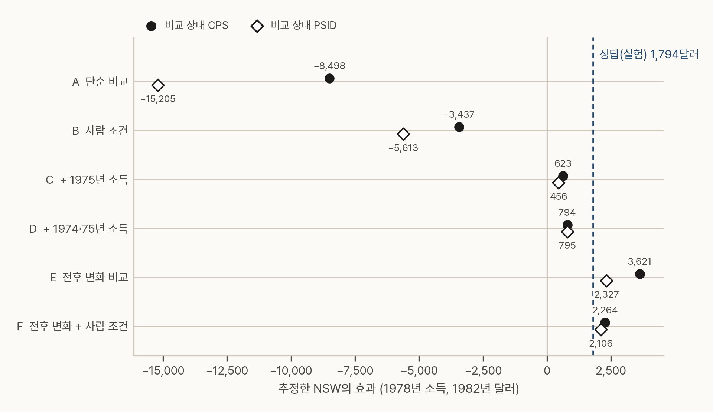
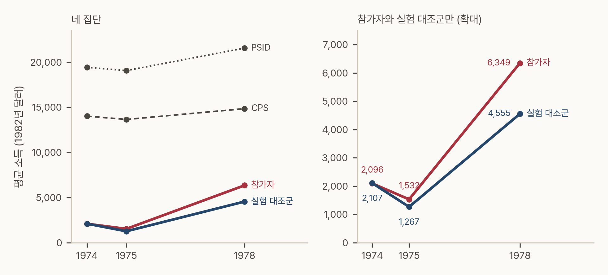

2. 정답지로 채점하기 — LaLonde와 NSW 실험#
앞 절에서 본 블랙박스 다섯 개를 떠올려 보자. 같은 질문에 상자마다 다른 숫자를 내놓았고, 속이 보이지 않으니 어느 숫자를 믿어야 할지 알 수 없었다. 그런데 만약 우리가 정답을 아는 질문이 하나 있다면 어떨까? 그 질문을 상자들에 넣어 보면, 어느 상자가 맞히고 어느 상자가 틀리는지 채점할 수 있다. 1986년에 경제학자 Robert LaLonde가 한 일이 바로 이것이다.
이 연구는 미시 데이터를 쓰는 노동경제학에도 신뢰성 간극이 있다는 것을 보여 준 대표적인 증거다. 앞 절의 Lewis가 노조 임금 연구를 검토해 정교한 방법이 오히려 믿기 어렵다고 결론 내린 것과 같은 무렵이다. Lewis는 이미 나온 연구들을 모아 비교했다. LaLonde는 한 걸음 더 나아가, 정답을 알고 있는 데이터로 당시의 방법들을 직접 채점해 보았다. 이 절의 물음은 이것이다. 실험이 없을 때 쓰던 당시의 최신 방법들은 실험이 알려 준 정답을 맞혔을까?
블랙박스를 채점하려면 정답지가 필요하다#
앞 절에서 우리는 시뮬레이션 데이터로 노조 가입의 효과를 32가지 방법으로 추정했다. 그때는 정답이 10%라는 것을 알았다. 데이터를 우리가 직접 만들었기 때문이다. 그래서 32개의 추정값 가운데 어느 것이 정답에서 얼마나 빗나갔는지 채점할 수 있었다.
현실의 연구에는 이런 정답이 없다. 노조에 가입하면 임금이 정말 얼마나 오르는지, 일자리 프로그램에 참가하면 소득이 정말 얼마나 오르는지 아무도 모른다. 모르니까 연구를 하는 것이다. 그래서 어떤 방법이 맞는 답을 내는지 확인할 길이 없다. 문제는 푸는데 정답지가 없는 셈이다.
그런데 아주 드물게 현실에도 정답지가 생기는 경우가 있다. 바로 무작위 실험(randomized experiment)이다. 앞 절에서 본 음의 소득세 실험처럼, 사람들을 제비뽑기로 두 집단으로 나누고 한 집단에만 무언가를 해 주는 실험이다. 제비뽑기로 나누었으니 두 집단은 처음에 평균적으로 비슷하다. 나중에 두 집단 사이에 차이가 생겼다면, 그 차이는 해 준 것의 효과라고 볼 수밖에 없다. 실험이 정답지가 되는 이유다.
LaLonde의 생각은 이 정답지를 이용하는 것이었다. 먼저 실험으로 정답을 구한다. 그다음 정답지를 덮고, 실험이 없을 때 경제학자들이 쓰던 방법으로 같은 질문에 답해 본다. 마지막으로 정답지를 펴서 채점한다. 채점 대상은 당시 경제학자들이 쓰던 블랙박스들이다.
제비뽑기로 나눈 일자리 — NSW 실험#
LaLonde가 쓴 정답지는 NSW(National Supported Work Demonstration)라는 미국의 시범 사업이다. 1970년대 중반 미국 정부는 일자리를 얻기 가장 어려운 사람들을 도울 방법을 찾고 있었다. 오랫동안 복지 급여로 생활해 온 엄마들, 마약 중독에서 회복 중인 사람, 교도소에서 막 나온 사람, 학교를 그만두고 일도 하지 않는 청년들이었다. 이들에게 구직 요령을 알려 주는 것만으로는 부족하다고 보고, 아예 일자리를 직접 주기로 했다. 참가자는 12~18개월 동안 임금을 받으며 일했다. 처음에는 쉬운 일로 시작해 조금씩 요구 수준을 높이고, 감독자가 가까이서 지도했다. 일하는 습관을 몸에 붙여 일반 일자리로 옮겨 가게 하는 것이 목표였다. 영어 문헌은 이런 사업도 넓게 훈련 프로그램(training program)이라고 부르지만, 교실에서 기술을 가르치는 직업훈련과는 다르다.
NSW가 특별한 것은 참가자를 정한 방법이다. NSW를 신청해 자격 심사를 통과한 사람들을 제비뽑기로 두 집단으로 나눴다. 뽑힌 사람은 NSW 일자리를 받았고, 뽑히지 못한 사람은 받지 못했다. 이처럼 효과를 알고 싶은 일(여기서는 NSW 일자리)을 처치(treatment)라고 부른다.[1] 이 책에서는 처치를 받은 사람들을 참가자, 제비뽑기에서 떨어져 처치를 받지 못한 사람들을 실험 대조군(control group)이라고 부른다. 두 집단은 같은 형편에서, 같은 NSW 프로그램을 신청하고, 같은 심사를 통과한 사람들이다. 둘을 가른 것은 제비뽑기 하나뿐이다.
이것이 왜 중요한지 생각해 보자. 우리가 알고 싶은 것은 참가자들이 NSW 덕분에 얼마나 더 벌었느냐다. 그러려면 참가자들이 프로그램에 참가하지 않았다면 얼마를 벌었을지 알아야 한다. 하지만 같은 사람이 참가하기도 하고 참가하지 않기도 할 수는 없다. 참가한 사람의 “참가하지 않았다면”은 영영 볼 수 없다.
제비뽑기가 이 문제를 풀어 준다. 실험 대조군은 참가자와 같은 문을 두드렸다가 제비뽑기에서만 떨어진 사람들이다. 그러니 실험 대조군이 번 소득은 “참가자들이 참가하지 않았다면 벌었을 소득”을 대신 보여 준다. 이 “그렇지 않았다면”이라는 생각은 이 책에서 여러 번 다시 나온다. Angrist의 장에서는 여기에 기호를 붙이고, Imbens의 장에서는 이것을 하나의 틀로 세운다.
이 절에서 쓰는 데이터로 계산하면, NSW 프로그램이 끝난 뒤인 1978년에 참가자는 평균 6,349달러를, 실험 대조군은 평균 4,555달러를 벌었다.[2] 차이는 1,794달러다. 사실 이 숫자는 445명의 데이터에서 얻은 추정값이라 오차가 있다. 표준오차는 약 633달러이고, 95% 신뢰구간은 551~3,038달러다. 이 절에서는 1,794달러를 정답으로 부르기로 한다. 요컨대 NSW 일자리는 참가자의 1978년 소득을 평균 1,794달러 올렸다.
정답지를 덮고 문제를 풀다 — LaLonde의 생각#
현실에서는 정부의 프로그램이 대부분 제비뽑기 없이 운영된다. 연구자 손에 들어오는 것은 참가자의 기록, 그리고 프로그램과 상관없는 일반 사람들의 기록뿐이다. 실험 대조군 같은 것은 없다. 그래서 경제학자들은 일반 사람들 가운데서 비교 상대를 구한다. 참가자의 소득을 일반 사람들의 소득과 비교하고, 나이나 학력처럼 두 집단이 다른 점은 회귀분석에 통제 변수로 넣어 같게 맞추려 한다.
LaLonde는 NSW 데이터로 이 상황을 그대로 흉내 냈다. 정답을 구하는 데 쓴 실험 대조군을 치워 버리고, 그 자리에 미국의 대규모 가구 조사 두 가지에서 뽑은 일반 사람들을 넣었다. 하나는 미국 정부가 달마다 가구를 뽑아 일자리와 소득을 묻는 조사(CPS, Current Population Survey)이고, 다른 하나는 같은 가구를 해마다 따라가며 소득을 묻는 조사(PSID, Panel Study of Income Dynamics)다. 이 절에서 쓰는 데이터에는 CPS에서 15,992명, PSID에서 2,490명이 들어 있다. 그런 다음 당시 경제학자들이 쓰던 방법을 하나씩 적용해 NSW의 효과를 추정했다. 마지막으로 그 추정값들을 정답과 맞춰 보았다.
LaLonde가 채점한 방법 가운데는 앞 절에서 Lewis가 믿기 어렵다고 한 정교한 방법도 들어 있었다. 누가 프로그램에 참가하는지가 정해지는 과정을 따로 식으로 세워, 참가자와 비교 상대의 차이를 바로잡으려는 방법이다. 이른바 표본선택 모형(sample selection model)으로, 이 방법을 세운 경제학자 James Heckman의 이름을 따 Heckman의 2단계 추정(Heckman two-step)이라고도 부른다. 당시로서는 가장 새로운 방법이었다. 이 방법은 참가 여부를 설명할 변수를 고르는 데 따라 답이 크게 달라져서, 이 절에서 다시 해 보는 계산(뒤의 방법 A~F)에는 넣지 않았다.
인물: Robert J. LaLonde (1958–2018)
미국의 노동경제학자. University of Chicago를 졸업하고(1980), Princeton에서 경제학 박사 학위를 받았다(1985). David Card의 강연에 따르면 박사 논문의 지도교수가 Orley Ashenfelter와 Card였다.
박사 학위를 받은 뒤 University of Chicago에서 가르쳤고, 나중에 공공정책대학원(Harris School of Public Policy)의 교수가 되었다.
실험 데이터로 비실험 방법을 채점한다는 이 절의 생각은 이후 수많은 연구가 따라 했다.
대량 해고를 당한 노동자의 소득 손실을 다룬 Jacobson, LaLonde, and Sullivan (1993)은 강연 끝에 다시 나온다. 이 장의 7절에서 본다.
강연의 결과 다시 계산하기 — 실험 대조군을 버리면#
강연은 LaLonde의 결과를 숫자 없이 한마디로 전한다. 당시의 최신 방법들이 내놓은 추정값이 서로 크게 엇갈렸다는 것이다. 얼마나 엇갈렸는지 숫자로 직접 확인해 보자. LaLonde가 쓴 데이터는 나중에 경제학자 Rajeev Dehejia와 Sadek Wahba가 다시 정리해 공개했다. 이 절에서는 그 데이터로 LaLonde가 한 채점을 다시 해 본다.
이번에는 앞 절과 다르다. 앞 절의 시뮬레이션 데이터는 컴퓨터로 만든 데이터였지만, 이번 데이터는 1970년대 미국에서 실제로 조사한 진짜 데이터다. 진짜 데이터인데도 정답이 있다. 실험 덕분이다.
풀 문제는 하나다. “NSW 일자리는 참가자의 1978년 소득을 얼마나 올렸나?” 이 문제를 비교 상대 두 가지(CPS, PSID)와 방법 여섯 가지로 풀었다. 방법은 다음과 같다.
방법 A, 단순 비교: 참가자와 비교 상대의 1978년 평균 소득을 그냥 뺀다.
방법 B, 사람 조건 맞추기: 나이, 학력, 인종, 결혼 여부, 고등학교 졸업 여부를 통제 변수로 넣고 회귀분석을 한다. 이런 조건이 같은 사람끼리 비교하는 셈이다.
방법 C, 1975년 소득까지 맞추기: B에 참가 전인 1975년의 소득을 더 넣는다.
방법 D, 1974년과 1975년 소득까지 맞추기: B에 참가 전 두 해의 소득을 모두 넣는다.
방법 E, 전후 변화 비교: 1978년 소득 자체가 아니라, 1975년에서 1978년 사이에 소득이 얼마나 늘었는지를 비교한다. 참가자의 소득이 비교 상대보다 더 많이 늘었다면, 더 늘어난 몫을 NSW의 효과로 본다. 이른바 이중차분(difference-in-differences)이다. 이 이름의 내력과 자세한 생각은 다음 절에서 본다.
방법 F, 전후 변화 + 사람 조건: E에 B의 조건을 함께 맞춘다.
방법이 여섯이고 비교 상대가 둘이니, 블랙박스가 12개인 셈이다. 그림 2-1이 12개 블랙박스의 채점 결과다.

그림 2-1. 실험 대조군 대신 일반 인구 표본(CPS, PSID)을 비교 상대로 놓고 여섯 가지 방법으로 추정한 NSW의 효과. 남색 점선이 실험으로 구한 정답 1,794달러다. 출처: Dehejia and Wahba (1999)가 다시 정리한 LaLonde (1986)의 데이터로 저자가 계산.
그림에서 보듯이 NSW의 효과 추정값 12개가 −15,205달러부터 3,621달러까지 흩어져 있다. 정답은 1,794달러다. NSW가 소득을 1만 5천 달러 넘게 깎았다는 답부터, 정답의 두 배쯤 올렸다는 답까지 나온 것이다. 같은 참가자, 같은 질문인데 말이다.
위에서부터 차례로 해석해 보자. 단순 비교(A)는 크게 음수다. NSW에 참가하면 소득이 크게 줄어든다는 답이다. 이유는 비교 상대에 있다. 참가자들은 일자리를 얻기 가장 어려운 사람들이었다. 그런데 CPS나 PSID의 일반 사람들은 참가 전부터 이미 훨씬 많이 벌고 있었다. 1975년에 참가자는 평균 1,532달러를 벌었지만, CPS의 일반 사람들은 13,651달러, PSID의 일반 사람들은 19,063달러를 벌었다. 처음부터 형편이 전혀 다른 사람들을 비교했으니, NSW와 상관없는 차이가 고스란히 “효과”로 잡힌 것이다.
나이, 학력 같은 사람 조건을 맞추면(B) 답이 정답 쪽으로 다가오지만 여전히 음수다. 참가 전 소득까지 맞추면(C, D) 456~795달러로 처음으로 양수가 된다. 그렇지만 여전히 정답의 절반에도 못 미친다. 조건을 맞출수록 정답에 가까워지기는 하지만, 넣을 수 있는 것을 다 넣어도 닿지 않는다. 앞 절의 시뮬레이션 데이터에서 본 것과 같다.
한편, 전후 변화 비교(E)는 방향이 반대로 빗나간다. CPS와 비교하면 3,621달러로, 정답의 두 배쯤이다. 왜 이번에는 효과가 부풀려졌을까? 그 이유가 다음 소절의 주제다.
그림에서 정답에 가장 가까운 것은 PSID와 비교해 전후 변화에 사람 조건까지 맞춘 방법(F)의 2,106달러다. 그런데 이 조합이 가장 잘 맞혔다는 것을 우리는 어떻게 알았을까? 정답지를 보았기 때문이다. 그러나 현실의 연구자에게는 남색 점선이 없다. 12개의 숫자만 있다.
가장 힘들 때 신청한다 — Ashenfelter의 하락#
전후 변화를 비교하는 방법이 왜 그럴듯한지 체중계로 생각해 보자. 집의 체중계가 고장 나서 늘 3kg 더 무겁게 나온다고 하자. 이 체중계가 알려 주는 몸무게는 틀렸다. 하지만 지난달과 이번 달을 같은 체중계로 재서 빼면, 3kg은 두 번 모두 들어 있으니 빠지고, 한 달 동안 몇 kg이 늘었는지는 정확히 나온다.
소득도 마찬가지다. 1975년에 CPS의 일반 사람들은 참가자보다 1만 2천 달러쯤 더 벌었다. 1978년 소득을 그냥 비교하면 이 원래의 차이가 고스란히 “효과”로 끼어든다(방법 A). 하지만 두 집단이 각각 1975년에서 1978년 사이에 소득이 얼마나 늘었는지를 비교하면, 원래의 차이는 두 해 모두 들어 있으니 빠진다. 남는 것은 늘어난 정도의 차이뿐이다.
다만 이 방법은 한 가지를 믿고 있다. NSW가 없었다면 두 집단의 소득이 같은 만큼 늘었으리라는 것이다. 체중계로 말하면, 두 번 잴 때 고장 난 정도가 똑같아야 한다. 그런데도 효과가 부풀려진 것은 이 믿음이 깨졌기 때문이다. 왜 깨졌는지는 참가자들의 소득이 움직여 온 길을 보면 알 수 있다. 그림 2-2를 보자.

그림 2-2. 1974년, 1975년, 1978년의 평균 소득. 왼쪽은 네 집단, 오른쪽은 참가자와 실험 대조군만 크게 그렸다. 출처: 그림 2-1과 같다.
왼쪽 그림에서 보듯이, CPS와 PSID의 일반 사람들은 소득이 높고 해마다 큰 변화 없이 움직인다. 오른쪽 그림의 참가자와 실험 대조군은 다르다. 1974년에서 1975년으로 가며 소득이 떨어졌다가, 1978년에는 크게 올라 있다.
프로그램에 참가하기 직전에 소득이 떨어진 것은 우연이 아니다. 사람들은 대개 일자리를 잃었을 때, 형편이 가장 나쁠 때 이런 프로그램을 신청한다. Card의 지도교수였던 경제학자 Orley Ashenfelter는 1964년 초에 미국 정부의 직업훈련 과정, 곧 교실에서 기술을 가르치는 과정을 시작한 사람들의 소득 기록을 해마다 따라가 보았다. 그랬더니 이들의 소득이 훈련 직전에 떨어져 있었다. 실업자를 우선 받게 되어 있던 프로그램이었으니 놀랄 일은 아니었다(Ashenfelter, 1978). 이 현상은 그의 이름을 따 Ashenfelter의 하락(Ashenfelter dip)이라고 불린다. 교실형 직업훈련에서 처음 찾은 현상이지만, 일자리를 직접 준 NSW에서도 똑같이 나타났다. 그림 2-2의 1975년이 바로 그 하락이다.
이 하락이 왜 문제인지 병원에 빗대 보자. 사람들은 감기가 가장 심할 때 병원에 간다. 약을 먹고 일주일 뒤에 나았다면, 나은 것은 약 덕분일까? 감기는 원래 일주일쯤 지나면 저절로 낫는다. 가장 아플 때를 출발점으로 잡으면, 저절로 회복된 몫까지 약의 효과로 보이게 된다.
소득도 마찬가지다. 일자리를 잃어 소득이 가장 낮을 때를 출발점으로 잡으면, 프로그램이 없었더라도 회복되었을 몫까지 프로그램의 효과로 잡힌다. 이것을 숫자로 확인할 수 있다. 실험 대조군을 보자. 이들은 NSW 일자리를 받지 못했는데도 1975년 1,267달러에서 1978년 4,555달러로 소득이 3,288달러 늘었다. NSW 없이 저절로 회복된 몫이다. 같은 기간 참가자의 소득은 1,532달러에서 6,349달러로 4,817달러 늘었다.
이제 세 가지 계산을 표 2-1에 나란히 놓아 보자.
표 2-1. 참가자의 소득 증가(1975 → 1978년)에서 무엇을 빼느냐에 따라 달라지는 효과 추정값 (단위: 1982년 달러). 출처: 그림 2-1과 같다.
계산 |
참가자의 소득 증가 |
빼는 것 |
추정한 효과 |
|---|---|---|---|
참가자의 전후만 본다 |
4,817 |
없음 |
4,817 |
CPS와 전후 변화를 비교한다(방법 E) |
4,817 |
CPS의 소득 증가 1,196 |
3,621 |
실험 대조군과 전후 변화를 비교한다 |
4,817 |
실험 대조군의 소득 증가 3,288 |
1,529 |
참가자의 전후만 보면 효과가 4,817달러로, 정답의 두 배가 훨씬 넘는다. 참가자의 소득 증가 4,817달러에는 두 가지가 섞여 있기 때문이다. 하나는 NSW 덕분에 늘어난 몫이고, 다른 하나는 NSW가 없었어도 바닥에서 저절로 회복되었을 몫이다. 전후 변화 비교는 이 “저절로 늘었을 몫”으로 다름 아닌 비교 상대의 소득 증가를 쓴다. 그러니 비교 상대는 참가자와 같은 바닥에서 출발한 사람이어야 한다.
실험 대조군은 그렇다. 참가자처럼 1975년에 바닥에 있었고, 그 뒤 3,288달러 늘었다. 이것을 빼면 1,529달러가 남는다. 정답 1,794달러에 가깝다.[3]
CPS의 일반 사람들은 그렇지 않다. 1975년에 소득이 거의 떨어지지 않았으니, 되찾을 몫도 없었다. 그래서 이들의 소득은 1,196달러만 늘었다. 이것을 빼면 참가자가 저절로 회복한 몫 가운데 2,092달러(3,288 − 1,196)가 빠지지 않고 남아, NSW의 효과로 잘못 잡힌다. CPS와 비교한 3,621달러가 실험 대조군과 비교한 1,529달러보다 정확히 2,092달러 큰 까닭이다.
표 2-1이 보여 주는 것은 방법보다 비교 상대가 중요하다는 점이다. 둘째 줄과 셋째 줄의 계산 방법은 똑같다. 다른 것은 누구와 비교했느냐뿐이다. 참가자와 같은 하락을 겪은 사람들과 비교하면 정답에 가깝고, 그렇지 않은 사람들과 비교하면 빗나간다. Ashenfelter는 일찍이 1974년에 직업훈련의 효과를 제대로 알려면 무작위 실험이 필요하다고 주장했다(Ashenfelter, 1974).
정답지가 없으면 어느 답이 맞는지 모른다 — LaLonde가 남긴 것#
LaLonde의 채점 결과를 정리하면 두 가지다.
첫째, 당시의 방법들은 정답을 안정적으로 맞히지 못했다. 비교 상대와 방법에 따라 답이 크게 달라졌다. LaLonde의 논문에서는 앞 절의 Lewis가 걱정했던 정교한 방법, 곧 참가자가 정해지는 과정을 따로 식으로 세우는 표본선택 모형도 예외가 아니었다. 미시 데이터를 쓰는 노동경제학이라면 거시 모형과는 다를 것이라는 기대가 있었지만, 한 사람 한 사람의 데이터가 있어도 블랙박스는 여전히 블랙박스였다.
둘째, 더 뼈아픈 것은 데이터만 보고는 어느 답이 맞는지 가려낼 수 없었다는 점이다. 실험 대조군이라는 정답지를 몰래 들여다보지 않고서는, 어느 방법이 가장 좋은 답을 냈는지 가려낼 수 없었던 것이다. 앞 절의 그림 1-4에서 남색 점선을 지운 것과 같은 상황이다. 숫자는 12개나 있는데, 그중 무엇을 믿어야 할지 알려 주는 것이 없다.
그렇다고 LaLonde의 채점이 절망만 남긴 것은 아니다. 표 2-1에서 보았듯이, 결과를 가장 크게 좌우한 것은 계산 방법이 얼마나 정교하냐보다 누구와 비교하느냐였다. 이 깨달음이 다음 걸음의 방향을 굳혔다. 더 정교한 블랙박스를 만드는 대신, 참가자와 정말 비슷한 비교 상대를 찾는 데 힘을 쏟자는 것이다. 그리고 그 비교가 왜 공정한지를 처음부터 드러내 놓고 밝히자는 것이다.
LaLonde의 박사 논문을 지도한 사람이 Ashenfelter와 Card였다는 점을 떠올려 보자. 두 스승은 제자보다 먼저 이 문제와 씨름하고 있었다. LaLonde의 논문보다 한 해 앞선 Ashenfelter and Card (1985)는, 당시 가장 새로운 방법들이 참가자가 스스로 신청해서 생기는 차이를 제대로 걸러 내지 못한다고 지적했다. 이 절의 방법 E, 곧 두 집단의 전후 변화를 비교하는 방법에 “이중차분”이라는 이름을 붙인 것도 이 논문이다. LaLonde의 채점은 스승들이 짐작하던 문제를 정답지로 확인해 준 셈이다. 다음 절에서는 이중차분이 어떤 비교인지, 그리고 그 비교가 왜 공정한지를 한 문장으로 밝히는 습관, 곧 “연구 설계”라는 말이 어떻게 들어왔는지 본다.
참고: 이 절의 데이터는 LaLonde (1986)가 쓴 표본을 Dehejia and Wahba (1999)가 다시 정리한 것이다. LaLonde는 남성 참가자 297명, 실험 대조군 425명을 썼는데, Dehejia와 Wahba는 그 가운데 1974년 소득 기록이 있는 사람만 남겼다. 그래서 정답도 다르다. LaLonde의 원래 표본으로 같은 계산을 하면 1978년 소득의 차이가 886달러다. 표본이 달라도 결론은 같다. 실험 대조군을 버리면 추정값이 크게 엇갈린다. Dehejia와 Wahba는 참가자와 비슷한 사람을 일반 인구에서 골라 짝을 맞추는 방법(성향 점수 매칭, propensity score matching)을 쓰면 정답에 꽤 가까워진다고 보고했다. 하지만 이 결과도 표본을 어떻게 고르느냐에 따라 크게 흔들린다는 반론이 이어졌다(Smith and Todd, 2005). 데이터는 Dehejia의 웹페이지에서 누구나 내려받을 수 있다. 다시 배포해도 된다는 허락이 따로 밝혀져 있지 않아, 이 책은 파일을 싣지 않고 계산 결과만 보인다.
더 읽을거리
LaLonde, R. J. (1986). Evaluating the econometric evaluations of training programs with experimental data. American Economic Review, 76(4), 604–620. — 이 절에서 다시 해 본 채점의 원논문.
Ashenfelter, O. (1978). Estimating the effect of training programs on earnings. Review of Economics and Statistics, 60(1), 47–57. — 훈련 직전의 소득 하락을 보인 논문.
Dehejia, R. H., Wahba, S. (1999). Causal effects in nonexperimental studies: Reevaluating the evaluation of training programs. Journal of the American Statistical Association, 94(448), 1053–1062. — 이 절에서 쓴 데이터를 정리한 논문.
요약 — 이 절의 물음과 답
물음: 실험이 없을 때 쓰던 당시의 최신 방법들은 실험이 알려 준 정답을 맞혔을까?
답: 맞히지 못했다. 같은 참가자, 같은 질문인데 NSW의 효과 추정값이 −15,205달러부터 3,621달러까지 흩어졌다. 실험으로 구한 정답은 1,794달러였다.
정답지는 제비뽑기 실험(NSW)이 주었다. 실험 대조군은 참가자가 “참가하지 않았다면” 벌었을 소득을 대신 보여 준다.
참가자는 형편이 가장 나쁠 때 프로그램을 신청한다(Ashenfelter의 하락). 이 하락을 겪지 않은 사람들과 전후 변화를 비교하면, 저절로 회복된 몫까지 효과로 잡힌다.
결과를 가장 크게 좌우한 것은 방법의 정교함보다 비교 상대였다. 그런데 정답지가 없으면 어느 답이 맞는지 데이터만으로는 가려낼 수 없었다.
그래서 다음 걸음은 더 정교한 블랙박스가 아니라, 공정한 비교 상대를 찾고 그 비교를 드러내 밝히는 것, 곧 연구 설계였다.
이 절의 해설영상
저자가 이 절의 핵심을 해설하는 영상이다. 유튜브에서 보기